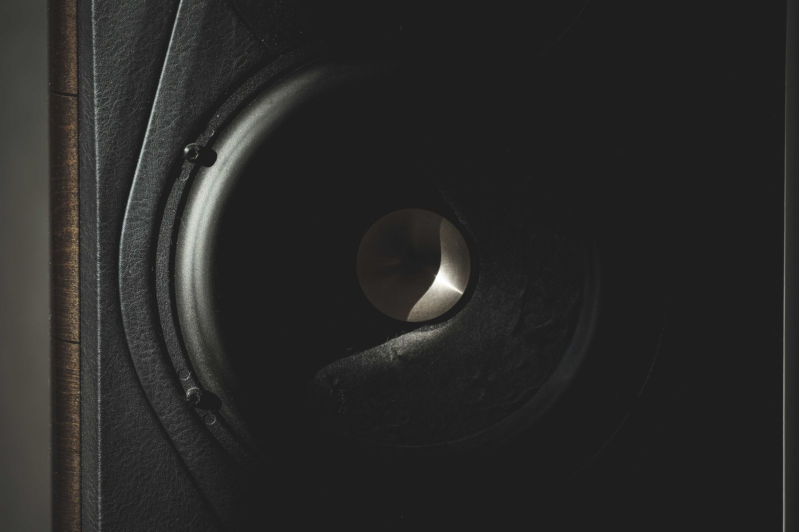
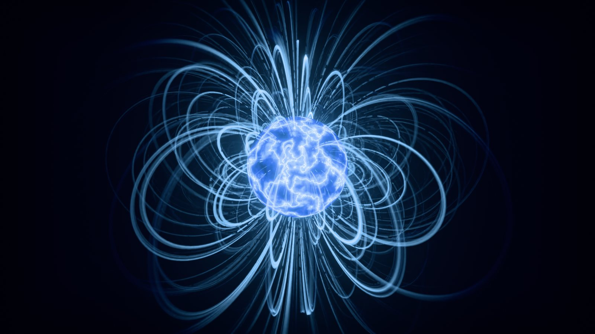
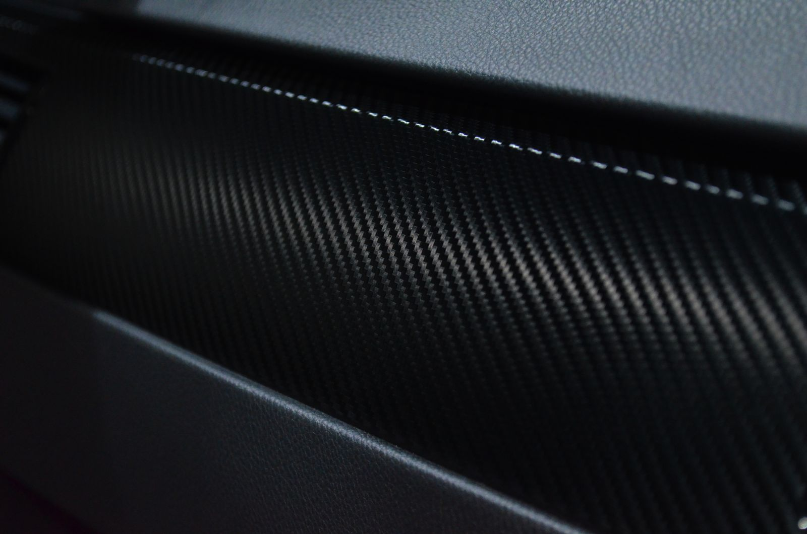
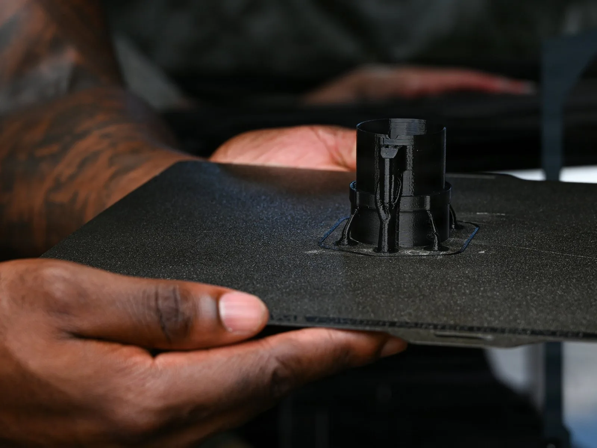
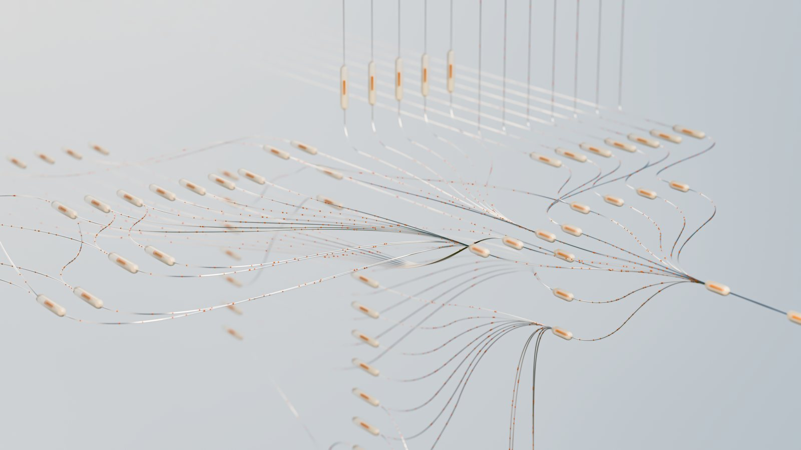
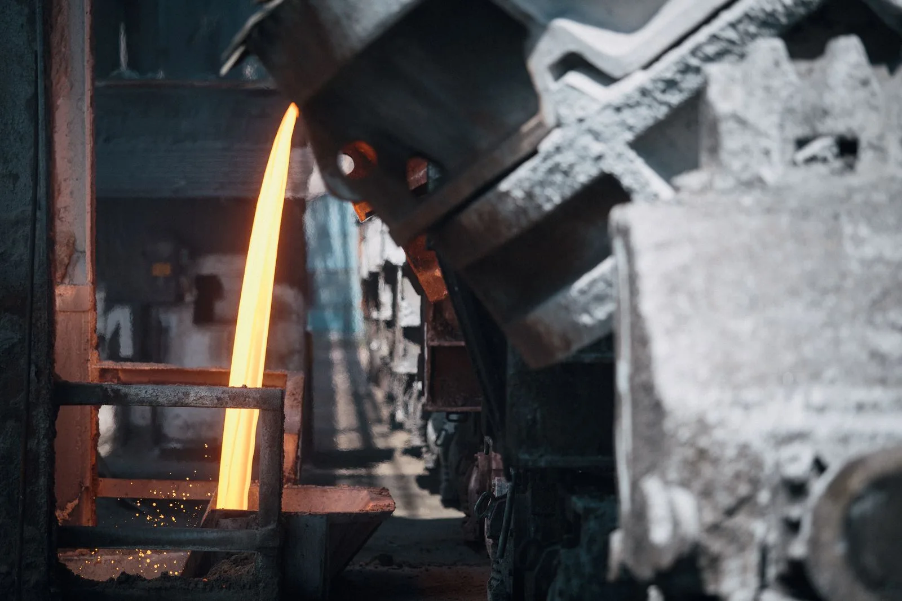

Technology
The technology behind each division
Each division exists because a technology our first product needed did not yet exist. We developed it — and each one reaches far beyond audio.

Division
MW Acoustics is where the group’s technology meets the listener — every division’s work, applied to consumer products you can hear.
- Magnet topologies
- Each MW Acoustics line is defined by its magnet system — neodymium, ferrite, alnico and field coil. The Neo line launches on proven motors from an established driver manufacturer, with MW Magnetics’ motor research informing the lines that follow.
- Acoustic lens and horn
- The acoustic lens and compression horn were redesigned with the group’s finite-element, CFD and deep-learning simulation tools, then cut from solid aluminum on MW Heavy’s CNC machines.
- Nested transmission line
- Advanced simulation let us nest two cabinets inside each other: a cylindrical transmission line that outperforms the rectangular and square lines of the competition.
- Additive and composite structures
- Cabinet structures generated with MW Additive’s software; carbon-fiber diaphragms and constrained-layer damping from MW Composites.
- Manufacturing
- CNC machining, precision assembly and the advanced global manufacturing partners developed through MW Heavy.
- SDS : Speaker Design Suite
- Design software, powered by WRKS, that shows in real time how every choice affects cost, performance and the finished result.
Applications
Consumer audio is where the group shows its work: high-end home audio, consumer electronics and professional audio.

Division

To reduce distortion in our speaker while keeping the source signal purely analog, we had to re-engineer how magnetic motor systems are built.
- FOCuS™ Hardware & Software
- MW Magnetics’ motor-system technology: variable field-coil systems and high-energy permanent magnets with novel non-linear geometries.
- Variable field-coil systems
- Electromagnet motors whose field can be varied — the basis of the Field Coil line.
- High-energy permanent magnets
- Ferrite, alnico and neodymium magnets in novel non-linear geometries, leading to precision electromagnetic solutions.
Applications
Electric motors and actuators for automotive and motorsport, aerospace and defense, energy storage, transportation and industrial automation.

Division

The high-strength, low weight, ultra-low resonance, and sustainable materials required for our speakers had not been invented. We needed to develop our own.
- THNSeT™ composite matrix
- A process and formula that delivers greater strength, damping, and cost all while reducing weight, with no compromise in sustainability and scaleability.
- High-performance carbon fiber
- Cutting-edge carbon-fiber composites for the most demanding applications.
- Thermoset / thermoplastic matrices
- Matrix systems engineered for strength, damping and scale.
Applications
Structures for aerospace and defense, automotive and Formula One, marine and industrial applications.

Division
No existing additive processes or materials could deliver the vibration-damping characteristics we needed for our speaker. So, we created it.
- FoAM™ Software
- Automated additive infill profiles optimized for frequency and load — geometries generated automatically under variable constraints.
- Sovereign, deployable, secure
- Slicing that runs on any hardware — deployable on site, at the edge or in the field, with nothing leaving the customer’s control.
- Legacy-compatible
- Works with existing advanced polymer and metal printing technologies, enabling stronger, lighter, and more precise components.
Applications
Medical, aerospace and defense, communications and automotive.

Division
To improve efficiency and precision in our own processes, we had to develop AI tools and workflows that could design, optimize and scale our innovations.
- BRiDG™
- AI-optimized manufacturing: an AI software hub leveraging LLM agents that augment existing manufacturing workflows and automate complex engineering challenges.
- MetaGraph
- Connect, clarify and harness your AI tools, apps, information, data and correspondence in one engineered, adaptable and highly usable system.
- Alignment
- Research into AI systems that stay safe, predictable and accountable as they scale.
- Computational storage
- Moving computation to where the data lives, cutting the cost and energy of large-scale AI.
- Beyond transformers
- Next-generation model architectures outside the transformer paradigm. We are looking to the future to design scalable, cost-effective and safe AI.
- Legacy-compatible
- Drives next-generation Industrial Automation while utilizing legacy digital manufacturing Hardware & Software.
Applications
Manufacturing, engineering and industrial automation — and the AI infrastructure behind them.

Division
Industrial Scale Solutions.
- Industrial engineering
- Engineering for demanding physical applications, drawing on the group’s magnetics, composites and additive technologies.
- Precision machining
- CNC machining and large-format fabrication — the same techniques that cut MW Acoustics’ aluminum horns and lenses.
- Global manufacturing partners
- An advanced, vetted network of manufacturing partners for production at industrial scale.
Applications
Energy, transportation, infrastructure, aerospace and defense.